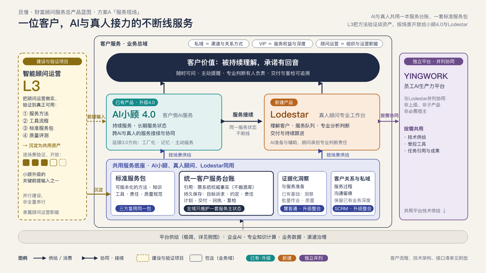
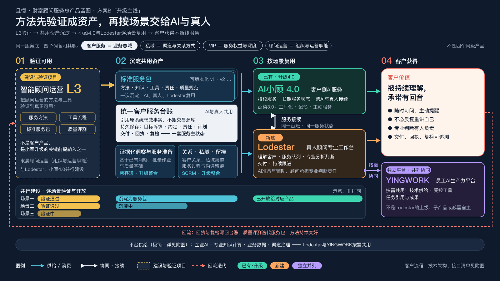
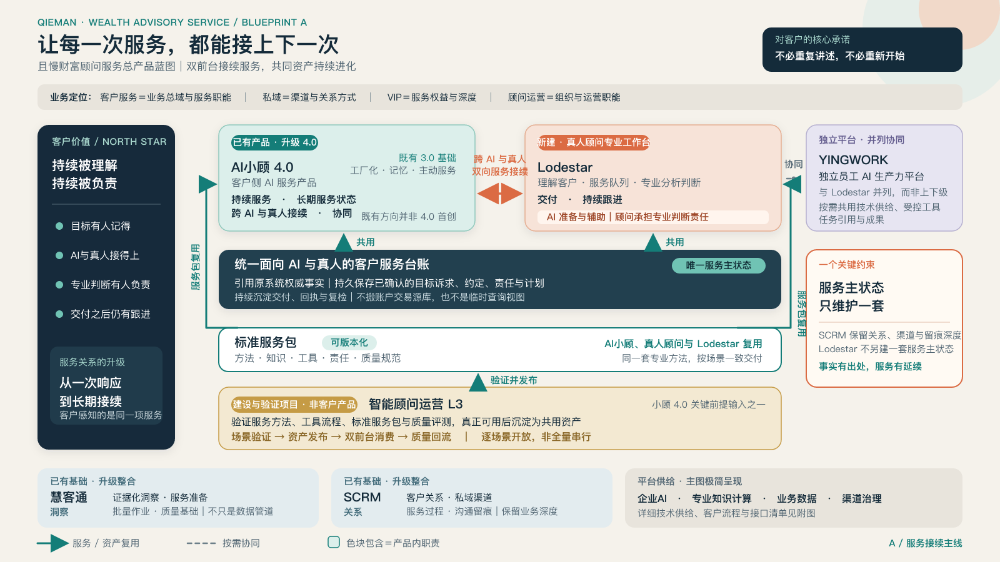
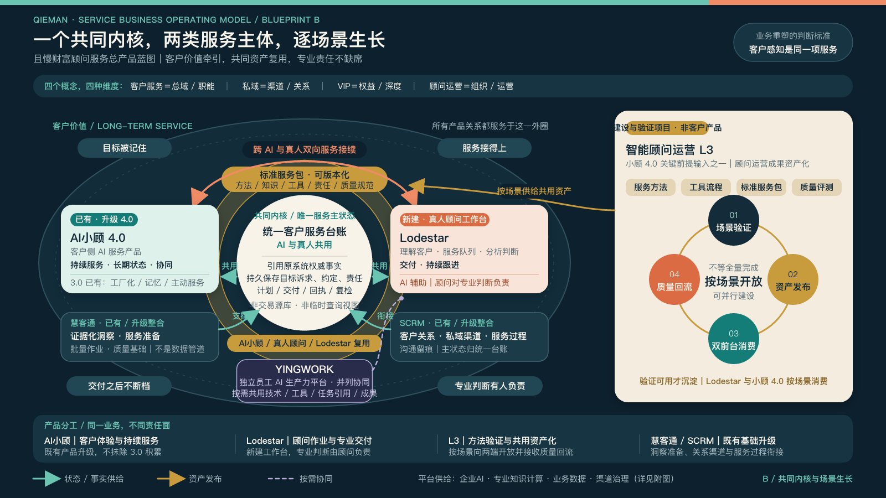

一位客户，AI与真人接力的不断线服务

同一业务背景，四张独立原稿。保留各自的结构、措辞与视觉判断，方便直接比较。点击图片可打开矢量原稿。
下载四稿：原始SVG＋高清PNG



四张图来自实际的Claude与Kimi任务：Claude Opus 5.5 Medium经Cursor调用，Kimi通过Kimi Work完成（任务未返回具体模型标识）。协调方负责业务brief、任务提交、原稿保存、格式校验、渲染和本比较页；作品内的业务抽象与布局由各自平台完成。
任务使用统一的核心业务约束，输出方式按各平台能力适配；这些作品用于方案比较，不能视作受控模型评测。图中能力为规划方向，具体上线状态按场景验收。
查看来源、模型披露与原稿哈希